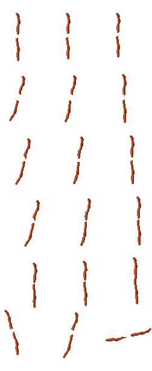
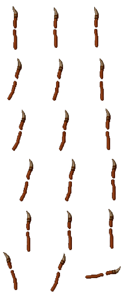

Standard staff reference

Horn staff at target resolution

Wood, horn and leather lashing only: no electrical effects. 18-frame candidate for visual review; not yet installed or verified against player-hand anchors.


